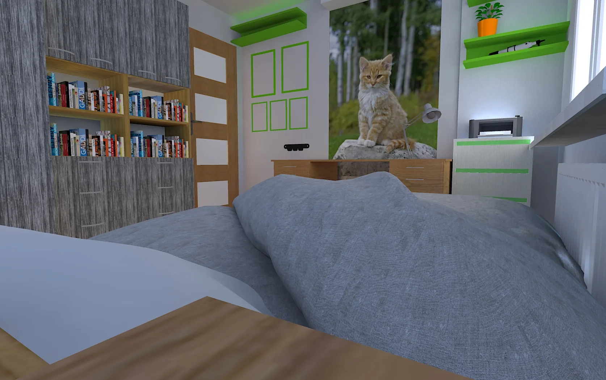
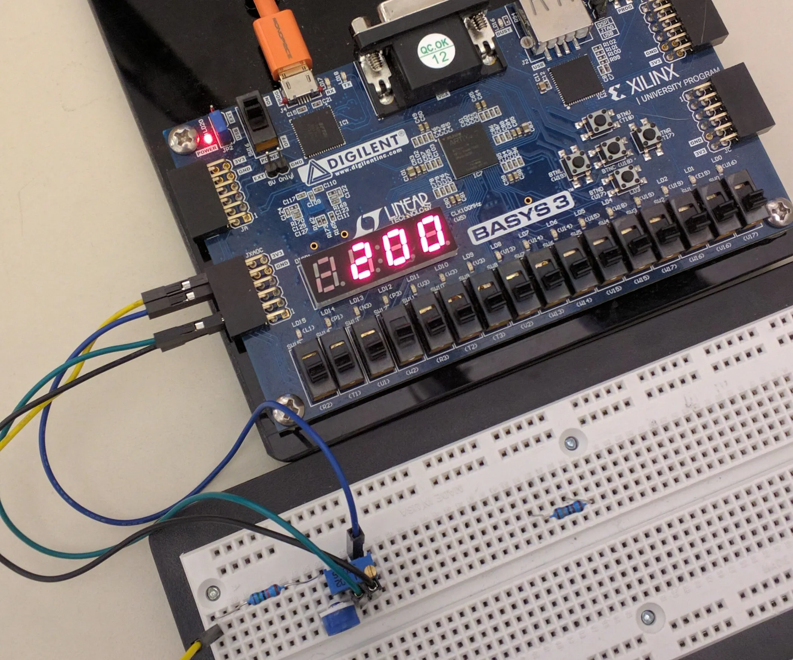
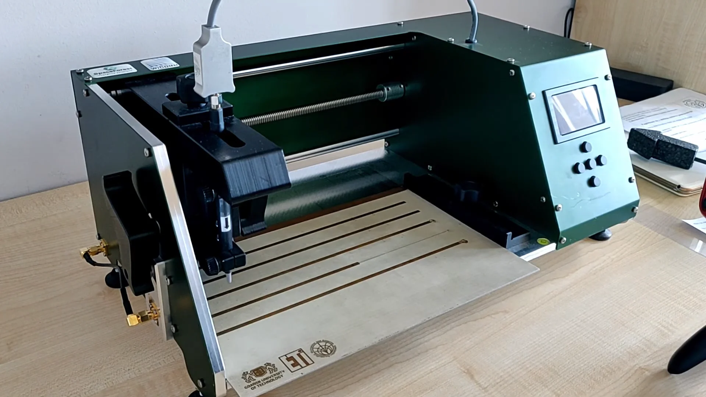

O mnie
Portfolio w obrazach
Łączę wiedzę z elektroniki, programowania i projektowania. Szybko uczę się nowych narzędzi, dobrze odnajduję się w pracy projektowej i lubię doprowadzać pomysły do działającego rozwiązania.



Najważniejsze umiejętności
Od układów do kodu




Praktyczna znajomość elementów elektronicznych i aparatury pomiarowej zdobyta podczas laboratoriów. Korzystam z narzędzi do projektowania i symulacji, takich jak Micro-Cap, LTspice, Falstad, EAGLE i Vivado. Znam też podstawy teorii sterowania, analizy systemów i modelowania.

Programuję w C++ i JavaScript, przede wszystkim przy własnych projektach technicznych. Solidne podstawy matematyki i fizyki pomagają mi sprawnie rozwiązywać problemy inżynierskie.


Automatyzuję powtarzalne zadania w AutoHotkey, pracuję w Visual Studio Code, konfiguruję systemy operacyjne oraz zarządzam maszynami wirtualnymi w VMware i VirtualBox.
Edukacja i doświadczenie
Od nauki do praktyki
2023 - obecnie
Politechnika GdańskaElektronika i telekomunikacja, 3. rok
Aktywnie działam w kole naukowym SimLE, gdzie odpowiadam za rozwój oprogramowania 3-metrowego radioteleskopu. Pracuję między innymi nad zdalnym sterowaniem, namierzaniem i śledzeniem gwiazd oraz analizą danych SDR.
2024.09 - 2024.10
ASSECOPion Telekomunikacji i Mediów
- REST API: przygotowanie endpointu do obsługi wniosków o wystawienie certyfikatu i zwracania gotowych certyfikatów.
- Integracja z MS ADCS: komunikacja z urzędem certyfikacji przez DCOM i przekazywanie wniosków do realizacji.
- Wdrożenie: przygotowanie i konfiguracja aplikacji do pracy w środowisku Microsoft IIS.
2019-2023
III Liceum Ogólnokształcące w SopocieProfil politechniczny (matematyka i informatyka)
Profil politechniczny dał mi solidne podstawy z matematyki i informatyki. W liceum zacząłem też wykorzystywać tę wiedzę w praktyce, tworząc pierwsze projekty IT.
Portfolio
Moje projekty
LabInc: Chemical Tycoon
UkończonyEdukacyjna gra strategiczna łącząca mechanikę incremental/idle z chemią. Zaczynasz od prostej kopalni węgla i rozwijasz imperium złożone z 16 fabryk - aż po reaktor jądrowy produkujący syntetyczne pierwiastki.
- Rozbudowana ekonomia gry obejmująca wartości od $0,01 do $1035
- 18 osiągnięć oraz automatyczny i ręczny zapis gry
- Autorski ciemny interfejs Swing - panele kopalni, fabryk, rynku i osiągnięć, animowane efekty oraz dźwięk
- Wszystkie 118 pierwiastków chemicznych do produkcji i sprzedaży - od węgla po oganeson

Job Search Aggregator
W trakcie rozwojuAplikacja zbiera ogłoszenia z największych portali pracy, porządkuje je w jednym rankingu i pomaga dokładnie sprawdzić najbardziej interesujące oferty.
- Oferty z wielu portali zebrane w jednym miejscu
- Wspólne filtry, filtrowanie według źródła i ranking wyników
- Analiza Deep Research z użyciem Gemini API: profil i opinie o firmie, wynagrodzenie na tle rynku, tryb pracy, faktycznie wykorzystywane technologie i benefity
- Wykrywanie sygnałów ostrzegawczych, takich jak planowane zwolnienia, skomplikowane struktury raportowania i silosy organizacyjne


Password Manager
W trakcie rozwojuProsty menedżer haseł rozwijany jako projekt grupowy. Ta sama lekka aplikacja działa na Windowsie i Linuksie, zapewniając wygodny dostęp do zaszyfrowanego sejfu.
- Natywne działanie w systemach Windows i Linux
- Projekt rozwijany przez mały zespół studentów


Po godzinach
Więcej moich projektów
Game Inventory Generator
Generator ekwipunku do gier w stylu Minecrafta. Pozwala wyszukiwać przedmioty w bazie oraz konfigurować zawartość slotów i liczbę elementów.
Panel sterowania radioteleskopem
Panel sterowania (frontend i backend) do radioteleskopu o średnicy 3 m, budowanego w kole naukowym SimLE - zdalne sterowanie, śledzenie i monitorowanie w jednym interfejsie.
Strona dla kwiaciarni
W trakcie rozwojuStrona przygotowana dla lokalnej kwiaciarni w ramach rzeczywistego projektu realizowanego przez mały zespół.
BlackBox
Prosta gra logiczna napisana w C++. Zadaniem gracza jest odnalezienie ukrytych pól na podstawie toru wystrzeliwanych promieni.
Analiza danych giełdowych
Aplikacja terminalowa w C++, która przetwarza dane giełdowe i wyświetla wykresy słupkowe bezpośrednio w konsoli.
Yapper
Aplikacja desktopowa na Windows do transkrypcji mowy na tekst, z dwoma kanałami push-to-talk oraz przełączanymi silnikami transkrypcji offline i online.
O mnie
O mnie
Mam na imię Piotr. Studiuję elektronikę i telekomunikację na Politechnice Gdańskiej (WETI), na profilu Komputerowe Systemy Elektroniczne. Tym, co wyróżnia mnie najbardziej, jest myślenie strukturalne - każdy problem rozkładam jak drzewo: kategoria, podkategoria, połączenia między elementami. Tak samo uczę się nowych rzeczy - zamiast chaosu w głowie, od razu sortuję wszystko w jasne kategorie. Automatyzacja i łączenie narzędzi w systemy nie są osobną umiejętnością - to po prostu efekt tego sposobu myślenia, nić, która spina wszystko inne w spójną całość.
Aktualnie skupiam się na:
- Pracy inżynierskiej nad agentem uczenia ze wzmocnieniem (PPO/DQN), który samodzielnie uczy się grać w grę zręcznościową
- Rozwoju oprogramowania 3-metrowego radioteleskopu w kole naukowym SimLE: zdalnego sterowania, namierzania i śledzenia gwiazd oraz analizy danych SDR
- Własnych projektach: agregatorze ofert pracy, tym portfolio i stronach przygotowywanych dla realnych klientów
- Korepetycje z matematyki - od szkoły podstawowej po poziom rozszerzony w liceum
Po godzinach zgłębiam geografię, tworzę blendy muzyczne, dbam o formę i dietę na siłowni, eksperymentuję z narzędziami AI do separacji audio, albo dopiero zaczynam ogarniać wizualizacje architektoniczne w ComfyUI.
Aktywność
Nad czym teraz pracuję
Aktywność w kodowaniu

Inżynieria oprogramowania nigdy nie stoi w miejscu, a narzędzia, które ją napędzają, zmieniają się jeszcze szybciej - kto nie nadąża, zostaje w tyle. Bycie na bieżąco czyni mnie bardziej produktywnym, a nie mniej ostrożnym: w czułych systemach trzeba ich używać uważnie i metodycznie.
Na bieżąco
- Praca inżynierska: rozwijam agenta uczenia ze wzmocnieniem (PPO/DQN), który samodzielnie uczy się grać w grę zręcznościową
- SimLE: odpowiadam za oprogramowanie 3-metrowego radioteleskopu
- Rozwój tego portfolio i agregatora ofert pracy
- Korepetycje z matematyki od szkoły podstawowej po poziom rozszerzony w liceum